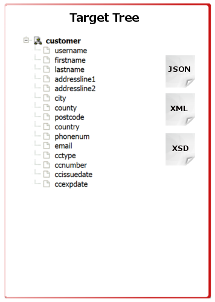
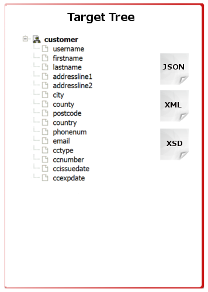
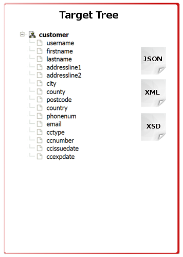

About Project
Plan
Resources
Demo
Smooks Direct Mapping
The jQuery Direct Map project is a sub project of Smooks Direct Mapping project. The goal of this project is to enable create relationship between two structural different data sets visualized as tree.


 
